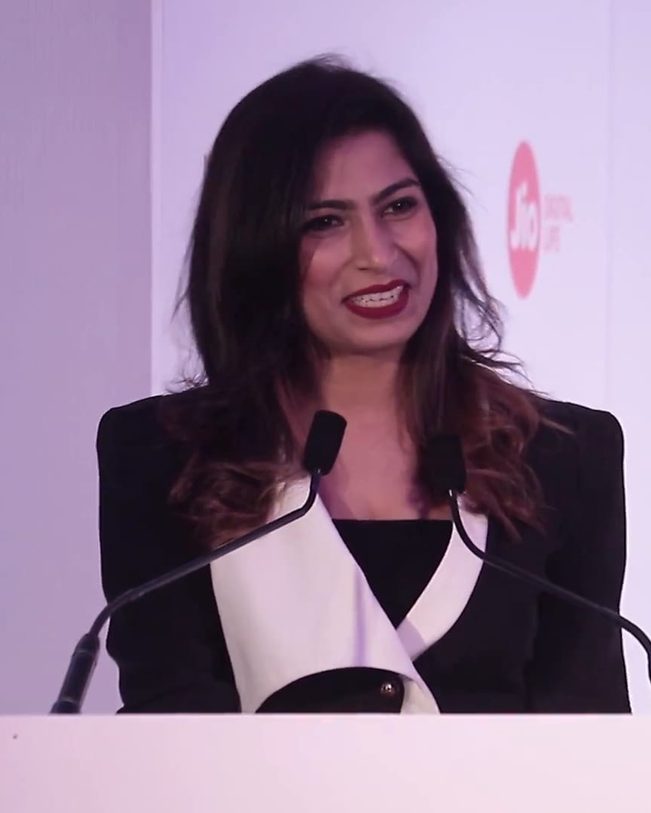

02 Worksकार्यEntryप्रविष्टि04 / 12
NS-010
Jio Filmfare 2018 press conference
Filmfare
Dec 2017 · Mumbai, India · Celebrity & press 03.05
Documented entryसचित्र प्रविष्टिHer voiceउनकी आवाज़ मेंClient with more than one entry 02.02

NS-010Detailsविवरण
- 01Codeकोड
- NS-010
- 02Dateतारीख़
- Dec 2017
- 03Clientक्लाइंट
- Filmfare
- 04Eventकार्यक्रम
- Jio Filmfare 2018 press conference
- 05Venueआयोजन स्थल
- Taj Lands End
- 06Cityशहर
- Mumbai
- 07Countryदेश
- India
- 08Formatप्रारूप
- Celebrity & press 03.05
- 09Industryउद्योग
- Media & entertainment†
- 10Languageभाषा
- English
- 11Roleभूमिका
- Host
- 12Guests named in her postउल्लिखित अतिथि
- Shah Rukh Khan
- 13Sourceस्रोत
- Her Instagram post (opens in a new tab)
- 14Mediaमीडिया
- 1 clip with her voice · 1 silent clip
† Industry is our classification. Reading rules: 02.00.
NS-010Plates and clipsचित्र और क्लिप1 clip with her voice · 1 silent clip
NS-010a the press-room opening 04 Watch

- Clip codeक्लिप कोड
- NS-010a
- Languageभाषा
- English
- Lengthअवधि
- 0:30
- Soundध्वनि
- Her voice उनकी आवाज़ में
- Captionsउपशीर्षक
- English (CC), timed to her speech
- Sourceस्रोत
- YouTube video (opens in a new tab)